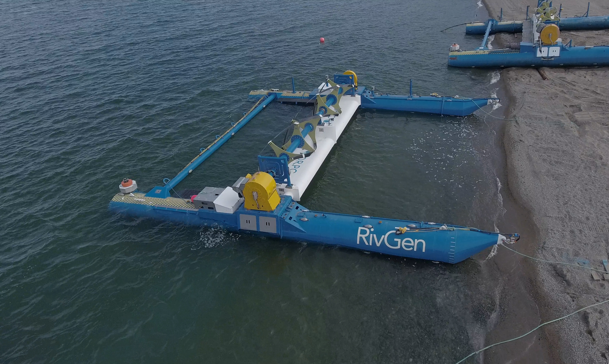
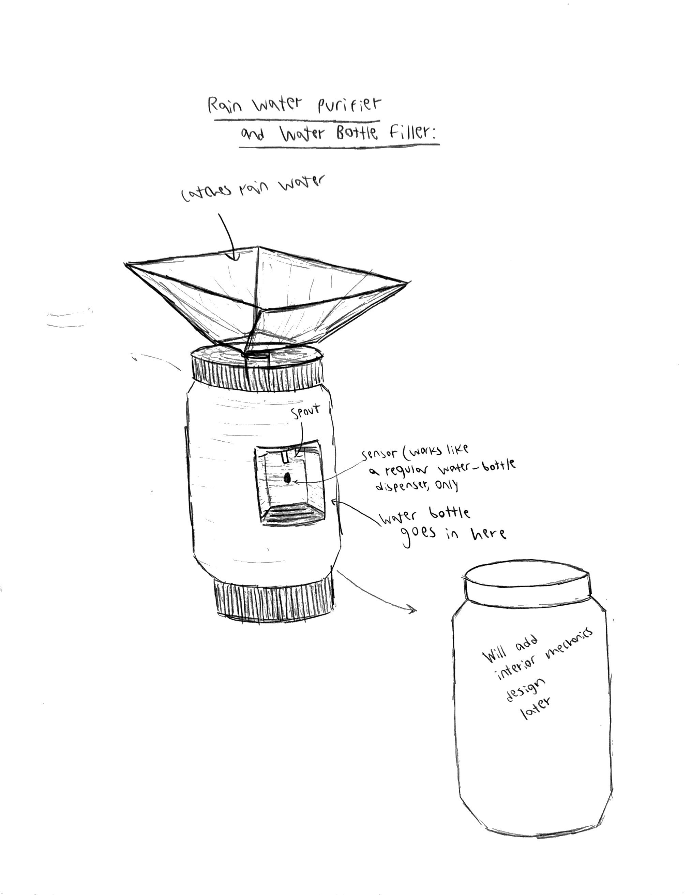
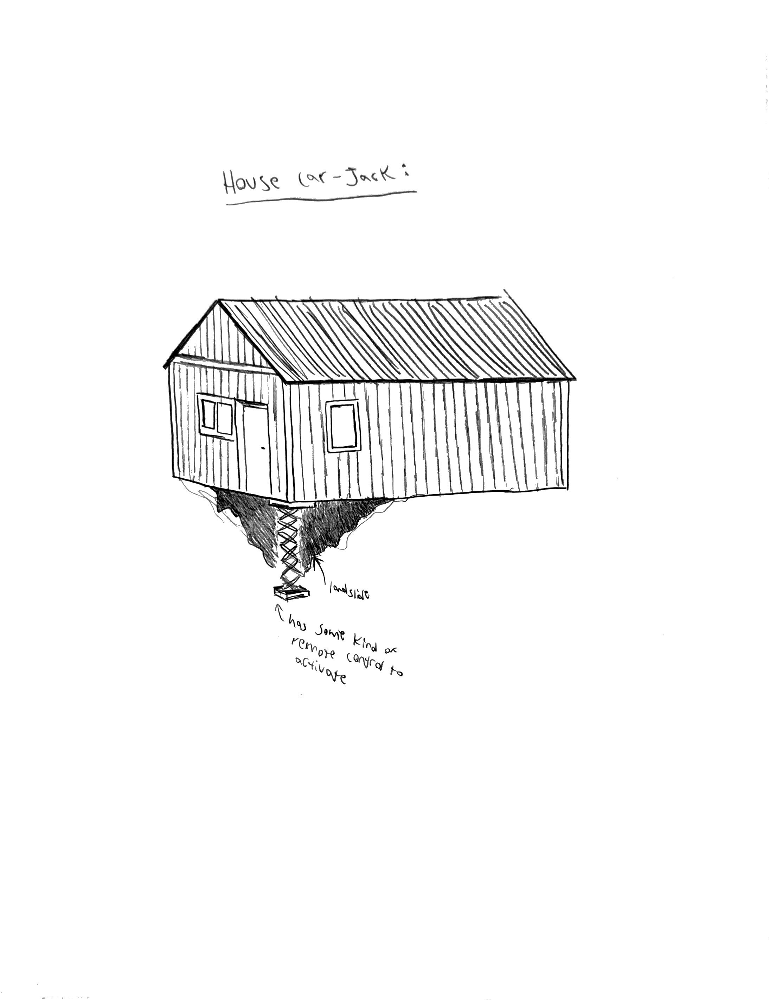

<div class="textcontainer">
<br></br>
<h3>Week 1: Final Project Proposal</h3>
<p class = "margin"></p>
Here are at most 3 ideas for my final project
<p class = "margin"></p>
<h4>Idea 1 : Small-scale replica of the ORPC RivGen Power System</h4>
<p class = "margin">
The Ocean Renewable Power Company (ORPC) is a company that specializes in renewable energy, specifically through generating power from tidal and river currents. The photo below is an example of one of their river power systems. I am spceifically interested in renewable energy as Alaska (where I'm from) is very reliant on fossil fuels. However, it is difficult for us to generate renewable energy from methods such as solar power, as there is very little sunlight in the winter. While water-based clean energy is also an option, much of rural Alaska relies on subsistence such as hunting and fishing. One of the many benefits of ORPC's current design is that it does not disrupt fish populations. One of these power systems currently is in collaboration with the community of Igiugig, Alaska. I would looking into making a much smaller-scale replica, that I could perhaps test in the Charles River.
</p>
<p></p>
<p class = "margin"></p>
<h4>Idea 2: Rain Water Purifier/Water Bottle Filler</h4>
<p class = "margin">
Another idea I would be interested in building is a rain water purifier that also acts as a water-bottle filling machine. This would be useful to areas that may not have that much freshwater access, and may rely on rain or well water as their source of water. It would also feature the human interaction of a sensor that senses when there is a water bottle, and has the spout release water. There would also be mechanics inside the machine that purify the rain water catched by the funnel.
</p>
<p></p>
<p class = "margin"></p>
<h4>Idea 3: House Car Jack</h4>
<p class = "margin">
While the name may sound silly, for my last possible project I would want to create a car jack for houses. In many areas of Alaska, there have been issues with houses collapsing into the ground due to permafrost thaw. As the permafrost thaw is only set to increase with climate change, more innovation needs to go into finding solutions for infrastructure damage in the arctic. The car jack would be controlled by some kind of remote control sensor, and could sense the height from the ground below that it would need to expand to. The main challenge would be to create a car jack that could hold a whole house.
</p>
<p></p>
</div>